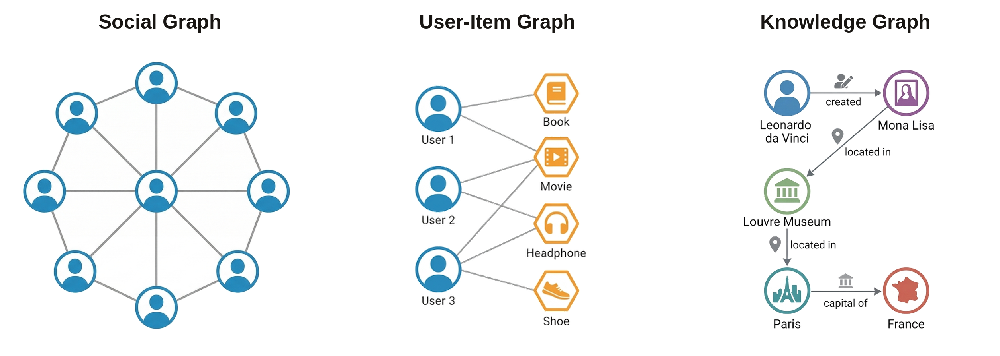
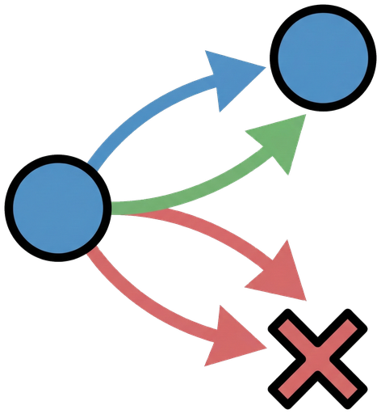
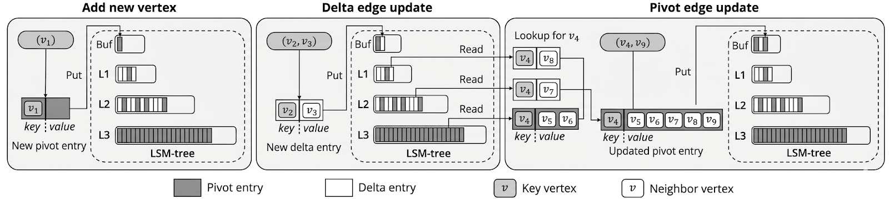

Update fast,
Lookup fast
Aster: graph-aware key-value store
Powered by Poly‑LSM, Aster adapts key‑value storage for evolving graphs, balancing frequent updates with efficient neighbor lookups.
Graphs are everywhere
A graph is a simple way to represent relationships: things (nodes) connected by links (edges).
It shows up in social networks, recommendations, and knowledge graphs.
And in the real world, these graphs don’t sit still—they evolve.

Evolving graphs need three things at once
Online graph workloads constantly mix small updates with neighbor lookups.
Doing both at scale means a system has to do three things well: updates, lookups, and scalability.

Fast updates
Add and delete edges quickly, even under heavy write pressure.
Fast lookups
Return neighbors with low latency—repeatedly—under mixed read/write workloads.
Scale on disk
When the graph outgrows memory, the disk layout dominates performance.
Why this is tricky
Some layouts make updates fast but slow down reads. Others make reads fast but make updates expensive. As the graph grows, these trade-offs become painful.
No single “best” structure
Low-degree and high-degree vertices behave differently. Read-heavy and write-heavy workloads do too. A fixed layout struggles somewhere.
How graph changes are stored on disk
Once a graph outgrows memory, every edge change has to land on disk.
A key-value store gives a simple way to map an ID to its data, which helps storage scale.
An LSM-tree is a disk-friendly way to handle many small changes: instead of rewriting the disk in place every time, it batches updates and reorganizes them in the background.
For graph data, that leads to one practical question: when one edge changes, should the system save only that small change, or rewrite the whole neighborhood?
Two ways to record one graph change
Imagine one vertex’s neighbor list as a page in a notebook.
When the graph changes, an LSM-backed key-value store can record that change in two different ways.
Add a sticky note
Keep the original page and save only the new change as a small note.
(+) Update: Just add a note.
(−) Lookup: Need to collect all the notes to see the full page.
Rewrite the whole page
Modify the full page instead of adding a small extra note.
(+) Lookup: Just find the page needed.
(−) Update: Find the page first, then rewrite it.
Aster’s answer: Poly‑LSM
Poly‑LSM keeps both ideas in the same storage engine. For one vertex, it can store one main neighborhood record and several smaller change records. That lets Aster start with cheap writes when needed, then recover cleaner reads as the data is reorganized in the background.

One main page
Each vertex keeps one main record that stores most of its neighborhood.
This is called a pivot entry.
Small extra notes
New edge changes can also be written as smaller records instead of rewriting the whole neighborhood immediately.
These are called delta entries.
Background cleanup
As RocksDB reorganizes data in the background, those smaller records can be merged back into the main record. So updates stay light at first, without giving up cleaner lookups later.
Aster's adaptive choice
Update-heavy or high-degree
Aster leans toward delta entries when a vertex changes often or has many neighbors.
Rewriting a large neighborhood on every update would create too much read and write work.
Lookup-heavy or low-degree
Aster leans toward pivot rewrites when lookups matter more or the neighborhood is small.
Paying a bit more during the update keeps later neighbor reads cleaner and faster.
So Aster writes lightly when change is frequent, then gradually restores a cleaner layout over time.
How Aster adapts to your workload
Move the sliders for an intuition-level view of how Aster changes its behavior across different workloads.
Results at a glance
Highly scalable
On billion-scale graphs, Aster achieves significant comparative performance where other approaches degrade.
Robust under mixed workloads
Adaptive updates help performance stay stable across different read/write mixes—without hand-tuning one “best” layout.
Designed for disk
Poly‑LSM controls I/O with compact representation and background consolidation for disk-resident graphs.
Publications & Contact
Aster: Enhancing LSM-structures for Scalable Graph Database
Dingheng Mo, Junfeng Liu, Fan Wang, and Siqiang Luo. Proc. ACM Manag. Data 3, 1 (SIGMOD), Article 12 (Feb 2025). DOI: 10.1145/3709662
GitHub
Repository: NTU-Siqiang-Group/Aster
Issues: NTU-Siqiang-Group/Aster/issues
Maintainers: dingheng001@e.ntu.edu.sg